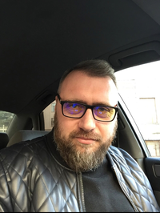

<div class="container py-5">
  <div class="card text-white bg-primary mb-3" style="max-width: 80rem;">
    <title>Petro Lazarenko CV</title>

    <body>
      <div class="container py-5">
        <div class="card-body">
          <div class="col-md-3">
            
          </div>
          <div class="col-md-9">
            <h2>Petro Lazarenko</h2>
            <h4>DevOps</h4>
            <p><strong>Phone:</strong> +38 (067) 334-63-02</p>
            <p><strong>Location:</strong> Lviv</p>
            <p><strong>Email:</strong> pt.lazarenko@gmail.com</p>
            <h5>Summary</h5>
            <p>In 2022, I changed my profession. Before that,
              I was an ordinary user who didn't even think
              much about how computer worked. But
              under the guidance of a professional mentor,
              I began to study the philosophy of DevOps.
              For me, this is a very exciting and difficult
              profession in which I began to get to know
              the world of the Internet, starting with the
              basic knowledge of Networks and ending
              with self-created CI/CD.
            </p>
            <h5>Skills</h5>
            <ul>
              <li>Networking</li>
              <li>Linux</li>
              <li>GIT</li>
              <li>AWS</li>
              <li>Terraform</li>
              <li>Jenkins</li>
              <li>Docker</li>
              <li>MySQL</li>
              <li>Jira/Confluence</li>
              <li>HTML</li>
              <li>CSS</li>
            </ul>
            <h5>Education</h5>
            <p>National Pedagogical Dragomanov University</p>
            <p>National Pedagogical History</p>
            <p>Sep 1999 - Jun 2004</p>

            <h5>Language</h5>
            <p>English A2</p>

            <h5>Experience</h5>

            <h6>Pivate Project</h6>
            <p>Jun 2022 - Present · 10 mos</p>
            <p>I got a great opportunity to study Linux, its distributions,
              principles of operation and use in practice such services as:
              AWS (ec2,S3,ACM,AIM,Security group,Cloudfront,ALB,Route53,VPC) Git. Described my
              small project in Terraform and wrapped it in Docker.
              Created in Jenkins Pipelines and configured CI/CD.
              Created my HTML Static/Dynamic page using NGINX.
              Made release plans for myself in Jira and Confluence.
            </p>
            <p>Self-employed</p>

            <h6>PIN Group - architecture and construction services company</h6>
            <p>2018 - 2022</p>
            <p>Owner</p>

            <h6>Tekta Domus - construction company</h6>
            <p>2015 - 2018</p>
            <p>Head Of The Supply Department</p>

            <h6>Retail Chains</h6>
            <p>2007 - 2015</p>
            <p>Head Of Department</p>
          </div>
        </div>
      </div>
    </body>
  </div>
</div>